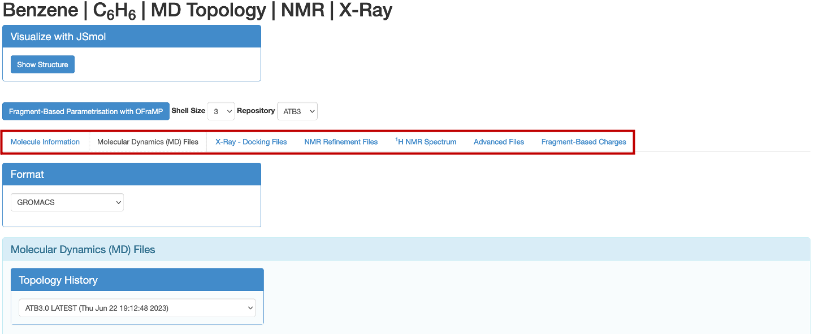
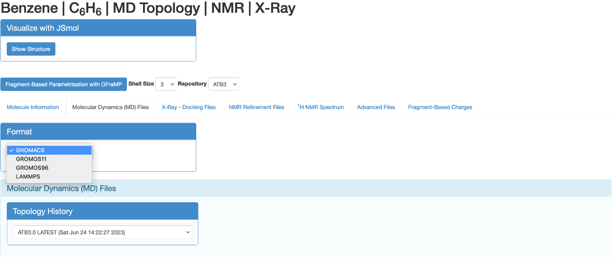
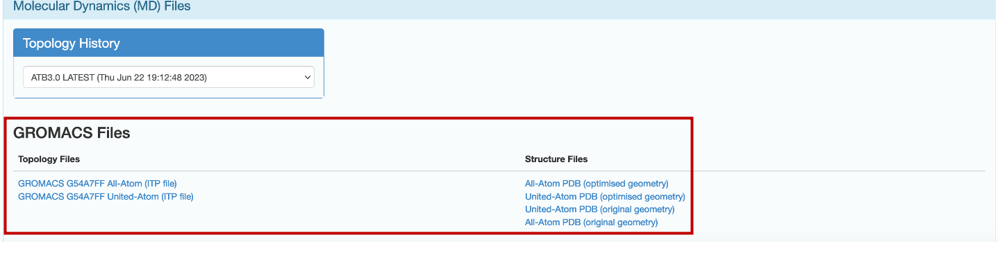
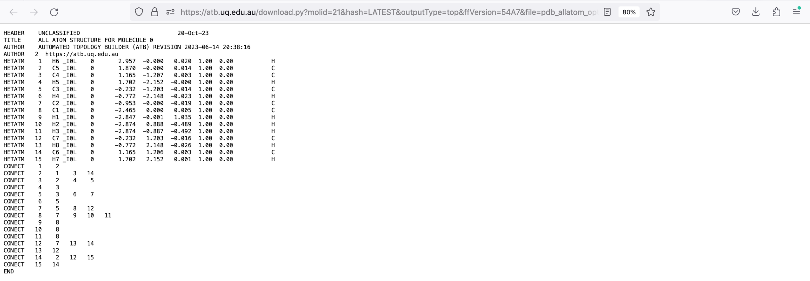
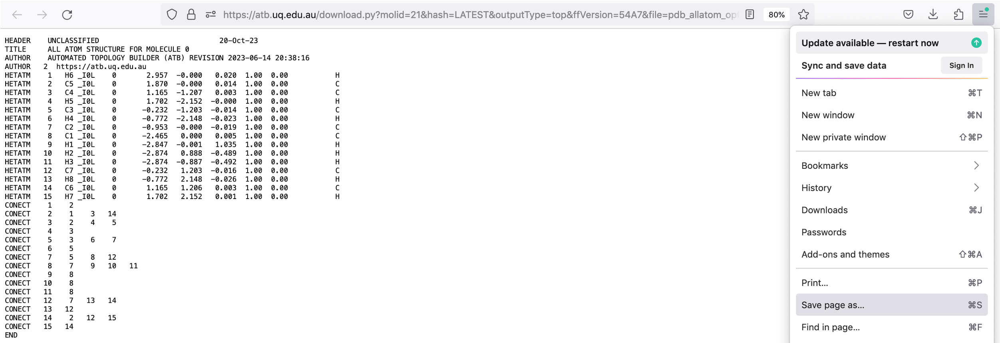
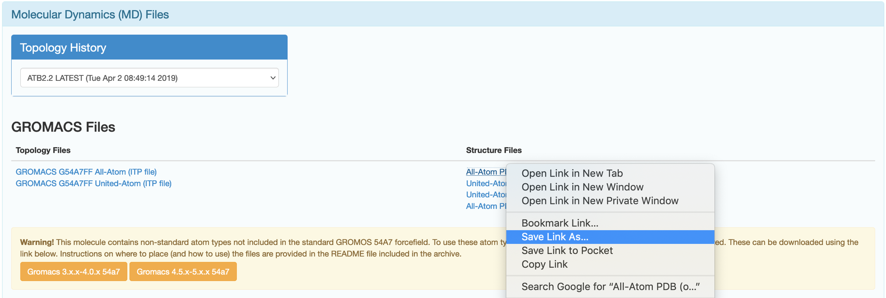

Downloading Outputs
The information page of a molecule contains
Files necessary for running molecular dynamics simulations: MTB, G96, PDB, ITP, or moltemplate files depending on the selected format (GROMACS, GROMOS11, GROMOS96, and LAMMPS). The LAMMPS formate is experimental.
X-ray docking files: eLBOW CIF, CCD compatible CIF, PDB, CNS (parameter and topology), PQR, and CYANA files
NMR refinement files: CYANA, CNS (parameter and toplogy), and PDB files. These files are only available for molecules that have been labeled as amino acids by the ATB team.
Note
All the files on the molecule page are created using tools developed by the ATB team or other groups.
To retrieve these files simply click on the appropriately labeled tab on the molecule page’s navigation bar.
{kind=link}
For example, if you wish to download the PDB or ITP files for your molecule to run a simulation, you can click on the ‘Molecular Dynamics (MD) Files’ tab. You can select the format in which the MD files will be downloaded. You can select between GROMACS, GROMOS11, GROMOS96, and LAMMPS. You will not need to select a format in the other tabs.
{kind=link}
Note
The web browser used in the following examples is Firefox
Method 1
Click on the hyperlink of the file you wish to download.
{kind=link}
This opens a page with contents of your desired file.
{kind=link}
Open your web browser’s menu and clicking ‘Save Page As’ or the equivalent thereof. You can then save the contents of this webpage to file with the desired name and appropriate extension as file to your device.
{kind=link}
Method 2
Right click on the hyperlink of the file you wish to download. Then click ‘Save Link As’ or the equivalent thereof.
{kind=link}
You can then save the contents of the hyperlink to a file on your device. Ensure the file has the appropriate extension.